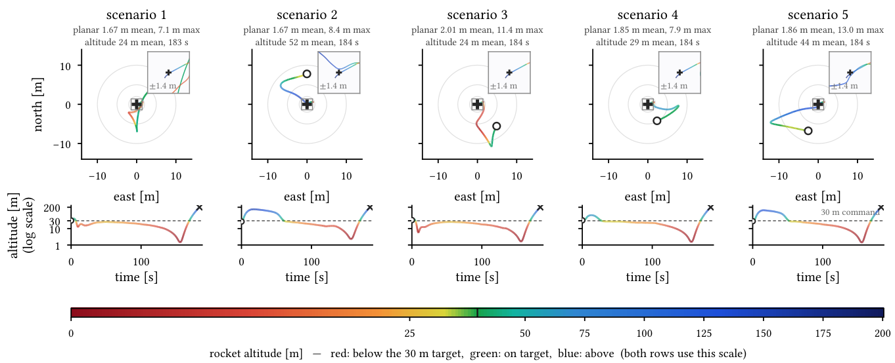

Why a rocket that learned to fly could not learn to hover
This paper is part of LANCER, my postdoctoral project at the University of Ljubljana on teaching autonomous vehicles to navigate difficult environments with reinforcement learning, which is learning by trial and error against a reward. This paper steps sideways to a rocket booster and asks what happens when the learner has no clear goal event.
The question
Earlier learning-based work on reusable rockets targets landing, where touchdown gives the learner a clear goal. We asked about hovering instead: release a booster at 80 metres and ask it to hold 30 metres above the pad. We built a simulator called RocketSim in the Unity game engine and trained an agent with PPO, a standard algorithm.

What happened
The agent learned to stay upright, stay over the pad and fly until its tanks ran dry, but not to hold the commanded height. With nothing changed but the random seed, its final altitude ranged from the ground to the ceiling. Across five seeds the score varied by less than ±10%, yet the mean altitude error ranged from 24 to 105 metres. Repeated runs used a faster, simplified version of the task.
There are two causes. Far from the target the reward barely changes with height, so PPO has no gradient to follow, although a hand-written controller that obeys the command scores 23% more. And below 33.6 tonnes the engine cannot throttle under its 39% floor, so for the last 55% of the burn no setting holds altitude.
We tried to repair both. Three reshaped objectives cut the mean final error from 36 to 6 metres but still strand one seed in five, and a vehicle that can throttle down sinks instead. Hover has to be fixed in the reward and in the vehicle together. RocketSim is uncalibrated against flight data, so it is an algorithmic simulation, not a trajectory predictor. The project page has the rest.
Sources
The figures and tables listed here are taken from the paper cited at the top of this page; the numbers quoted in the text come from it too.
- Figures: Fig. 3
Acknowledgements
This work was co-funded by the European Union's Horizon Europe research and innovation programme under the Marie Skłodowska-Curie COFUND Postdoctoral Programme, grant agreement No. 101081355 (SMASH), and by the Republic of Slovenia and the European Union from the European Regional Development Fund. It was also supported by the Slovenian Research and Innovation Agency (ARIS), research programme P2-0241, Synergetics of complex systems and processes. Views and opinions expressed are those of the authors only and do not necessarily reflect those of the European Union or the European Research Executive Agency. Neither the European Union nor the granting authority can be held responsible for them.
Cite the paper
Swarnendu Ghosh, David Muhič, Branko Šter (2026). RocketSim: Benchmarking Reinforcement-Learning Hover Control of a Reusable Booster. 29th International Multiconference Information Society (IS 2026), Vol. 1, pp. 64–67.
@inproceedings{ghosh2026rocketsim,
author = {Ghosh, Swarnendu and Muhi{
c}, David and {
S}ter, Branko},
title = {{RocketSim}: Benchmarking Reinforcement-Learning Hover Control of a Reusable Booster},
booktitle = {29th International Multiconference Information Society (IS 2026)},
volume = {1},
pages = {64--67},
address = {Ljubljana, Slovenia},
year = {2026},
doi = {10.70314/is.2026.skui.80}
}